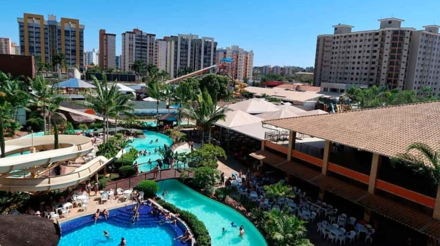
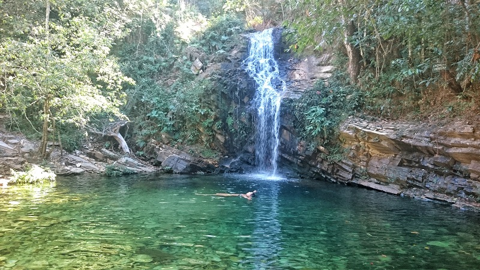

Passear em Caldas Novas!

Cidade conhecida por ser uma estância hidrotermal possuindo águas que
brotam do chão em temperaturas que variam de 43 °C a 70 °C.
Possue muitos hotéis e pousadas que nos meses te temporada faz com que
a cidade fique lotada de turistas. Hoje se tornou referência de algumas
festas que reunem famosos como Paula Fernandes, Luan Santana, Chitãozinho e Xororó,.
Veja no mapa como chegar em Caldas Novas.
Cachoeiras de Pirenópolis

Pirenópolis é um município histórico, sendo um dos primeiros fundados no estado de Goiás.
Foi importante centro urbano dos século XVIII e XIX, com mineração de ouro, comércio e agricultura.
Conhecida por suas festas tradicionais, rios, cachoeiras e serras, além de possuir grande diversidade em sua fauna e flora.
Veja o que fazer em Pirenópolis
neste Guia de Melhores Destinos.
Comidas de Goiás
A culinária goiana é conhecida por sua diversidade de cores e sabores.
Arroz com pequi, Pamonha, Escondidinho, Empadão são algumas das
delícias desta terra maravilhosa.
Veja algumas imagens que vão dar água na boca